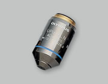
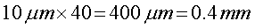

さて，顕微鏡の倍率のメインは，
対物レンズの倍率
です．
基本的には，この倍率が一次像の倍率です．
倒立顕微鏡で言うと，サイドポートの直後に結像されるところでの倍率です．
ここに実際にスクリーンをおいたときに現れる像が対物レンズの倍率分だけ拡大されます．
さらに，サイドポートなどを使って，二次像などをＣＣＤに結像する場合には，その間のレンズの分，拡大，縮小されます．
結果として，ＣＣＤに投影される倍率は，その間のすべての積，となります．
たとえば，対物レンズに４０倍のレンズを使います．

そして，以下のようなシステムを，サイドポートに接続したとします．
ここでは，
| 名称 | 品番 | 倍率 |
| 対物レンズ | UPlan-Fl 40x | 40 |
| 写真直筒 | IX-SPT | 1 |
| 撮影レンズ | PE3.3X | 3.3 |
| テレビアタッチメント | U-PMTVC | 0.3 |
となります．
最終倍率は，
となります．
つまり，１０ミクロンの物体は，

となるのです．
重要なポイントは，この値は，結像の実際の大きさ，なのです．
この大きさのものが，ＣＣＤに当たって，画像を取得できるのですから，実際に我々が見る，ＴＶモニターやＰＣでの大きさを直接表すものではないことに注意してください．
では，次に，ＣＣＤ上への結像がどの程度になって，我々の目に映るかを考えましょう．